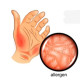

Contact dermatitis
1.Cream Moringa N=1 PRN
Or Cream Doctor JILA N=1
Or Cream Face Doux N=1
Or Cream QV N=1
2.Oint Hydrocortisone 1% N=1 q12h
Or Oint Betamethasone N=1
Or Oint Tacrolimus %0.03 N=1 ( age>18)
Or Oint Tacrolimus %0.1 N=1 (age>2)
نکته: درمان با شناسایی و دوری از عامل بوجود آورنده، درمان التهاب ایجاد شده ، استفاده از مرطوب کننده ها و کنترل خارش (هیدروکسی زین)
نکته: کرم های مرطوب کننده به ترتیب افزایش قیمت میتونین تجویز کنین.
نکته: برای موارد خفیف و نواحی با پوست نازک از هیدروکورتیزون استفاده کنید.
نکته: همچنین میتوانید برای نواحی که پوست نازکی داره یا چین دار است و نگران آتروفی پوست هستیم. از تاکرولیموس(مهارکننده کلسی نورین) استفاده میکنیم.
نکته: درصورت شدید بودن میتونید کورتون سیستمیک بدید.
1️⃣ اگزما
2️⃣ درماتیت سبورئیک
3️⃣ بیماری های قارچی (تینه آ بدن و...)
4️⃣ واکنش دارویی
Contact Urticaria Syndrome 5️⃣
6️⃣ پسوریازیس
7️⃣ گال
Onycholysis 8️⃣
Prurigo Nodularis 9️⃣
🔟 Erysipelas